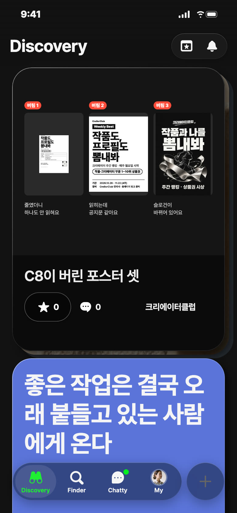
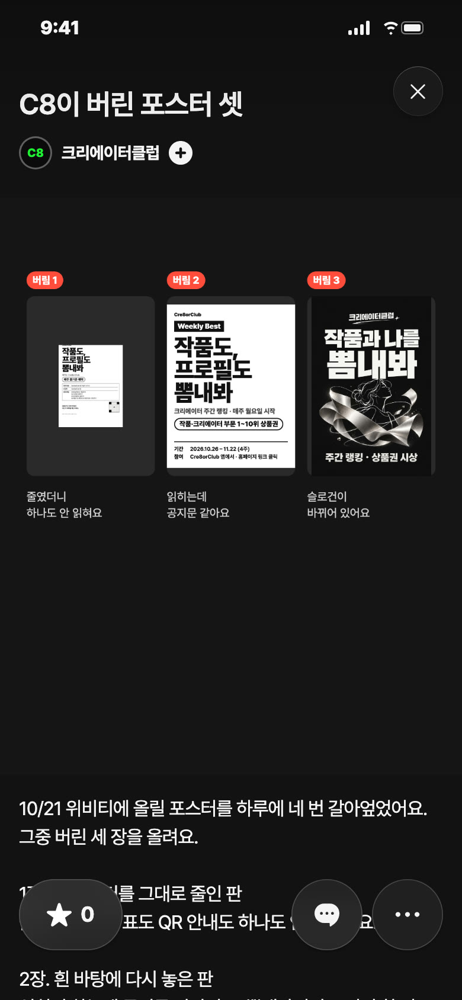
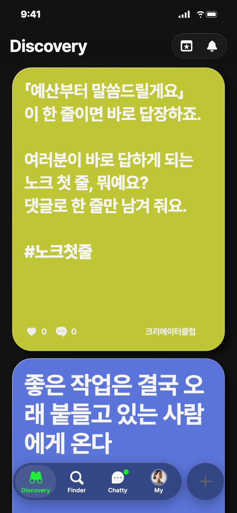
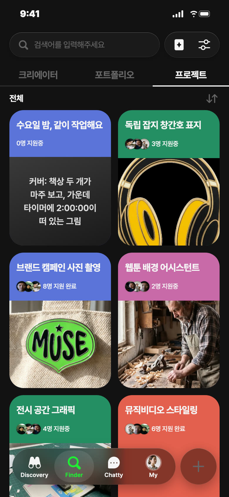
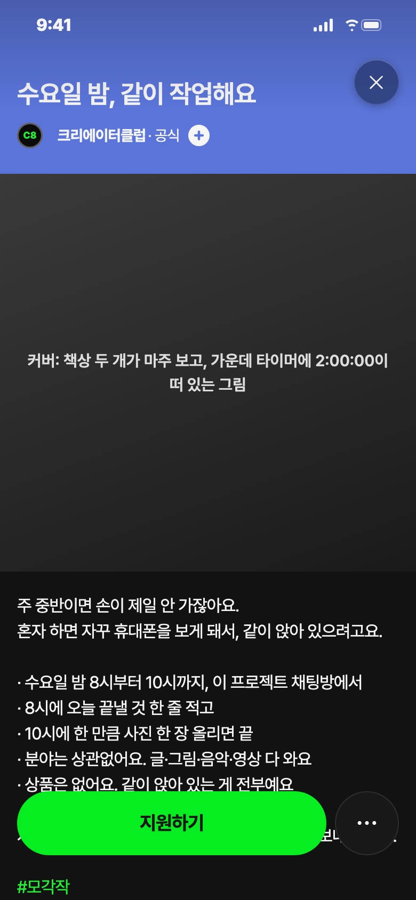

C8 앱 게시 시안 · 10/31(토) — 오늘은 쉬어요, 세 안 모두 비축
비축 · 젠지 추천 · 포트폴리오


칸: 보여 주기 × 놀이 (트렌드: 망한 것 모음)
언제: 다음 금요일 11/6 낮 12시 후보
보낼 사람: 디자인 하는 친구에게 「너 버린 거 많잖아, 이거 올려」
받고 싶은 댓글: 「로고 시안 열한 개 중에 열 개 버렸어요. 올릴게요」
제목
C8이 버린 포스터 셋
설명
10/21 위비티에 올릴 포스터를 하루에 네 번 갈아엎었어요. 그중 버린 세 장을 올려요. 1장. 큰 포스터를 그대로 줄인 판 줄였더니 참여 표도 QR 안내도 하나도 안 읽혔어요. 2장. 흰 바탕에 다시 놓은 판 읽히긴 하는데 공지문 같았어요. 뽐내라면서 그림이 한 장도 없었고요. 3장. 분위기를 새로 잡은 판 멋은 났는데 슬로건이 「작품과 나를 뽐내봐」로 바뀌어 있었어요. 정해 둔 말은 「작품도, 프로필도 뽐내봐」예요. 다들 하드에 버린 시안 하나씩은 있잖아요. #버린시안 달아서 한 장 올려 줘요. 왜 버렸는지는 한 줄이면 돼요. #버린시안 #작품도프로필도뽐내봐
비축 · 영감 · 다음 목요일 11/5 낮 12시 후보 · 노랑

칸: 잇기 × 놀이
왜 이 날: 목요일 질문 자리, 노크(채팅)를 소재로 한 안 중 아직 안 쓴 놀이 결
보낼 사람: 외주 받는 친구에게 「너는 뭐에 바로 답해?」
받고 싶은 댓글: 「작업 링크 먼저 주시면 바로 봐요」
영감 글
「예산부터 말씀드릴게요」 이 한 줄이면 바로 답장하죠. 여러분이 바로 답하게 되는 노크 첫 줄, 뭐예요? 댓글로 한 줄만 남겨 줘요. #노크첫줄
비축 · 프로젝트 · 파랑


칸: 함께 하는 시간
왜 비축: 채팅방을 열고 지킬 사람과 첫 날짜가 정해져야 올려요
보낼 사람: 같이 졸전 준비하는 동기에게 「수요일에 여기서 하자」
받고 싶은 지원 채팅: 「졸전 포스터 붙잡고 있어요. 들어갈게요」
제목
수요일 밤, 같이 작업해요
카테고리
모각작 · 함께 하는 시간
모집 내용
수요일 밤 8~10시 이 프로젝트 채팅방에서 각자 작업 · 8시에 오늘 끝낼 것 한 줄, 10시에 한 만큼 사진 한 장 · 분야 상관없이 8명 · 상품 없음
설명
주 중반이면 손이 제일 안 가잖아요. 혼자 하면 자꾸 휴대폰을 보게 돼서, 같이 앉아 있으려고요. · 수요일 밤 8시부터 10시까지, 이 프로젝트 채팅방에서 · 8시에 오늘 끝낼 것 한 줄 적고 · 10시에 한 만큼 사진 한 장 올리면 끝 · 분야는 상관없어요. 글·그림·음악·영상 다 와요 · 상품은 없어요. 같이 앉아 있는 게 전부예요 지원할 때 채팅에 「요즘 붙잡고 있는 것」 한 줄만 보내 주세요. #모각작